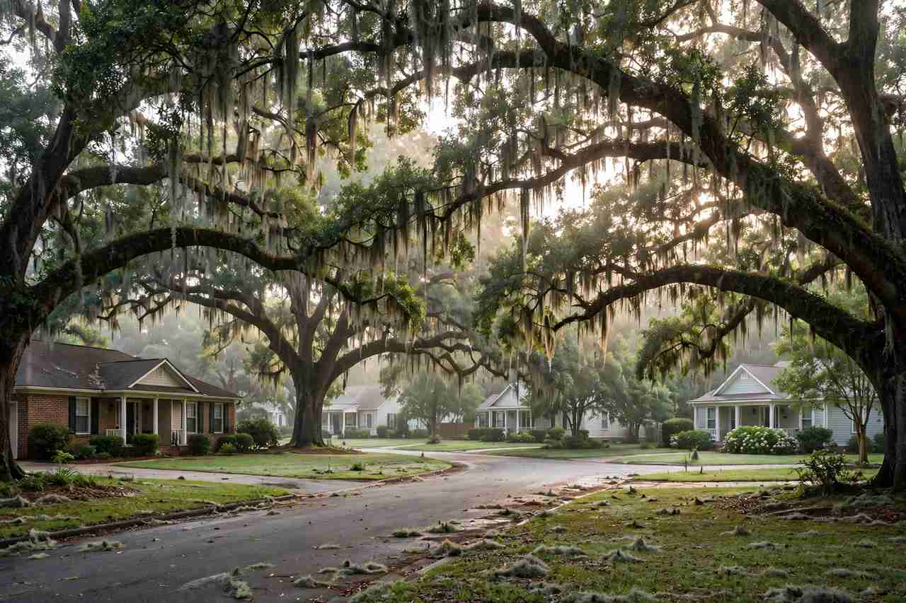

Rodent Control · Kosciusko, MS
Fast Rodent Control in Kosciusko, MS
Rats in the attic or mice in the kitchen in Kosciusko? Murvo provides same-day rodent control with local crews who inspect first, remove the animals already inside, and seal the entry points they used. Every job is quoted flat-rate in writing before work begins and backed by a written guarantee, covering homes and businesses across Attala County. Local crews cover 1 ZIP codes in the Kosciusko area, from Goodman to the far side of Attala County.
24/7Availability
1ZIP codes covered
Same-dayResponse
Licensed · Upfront options · Written guarantees · Fully insured
Kosciusko at a glance
Local Rodent Control for Kosciusko, MS.
Attala County
Countycentral Mississippi
RegionJackson · 63 mi
Nearest metro63 miles northeast of Jackson
From Jackson1
ZIP codes covered Service by service in Kosciusko
Rodent Control Services Available in Kosciusko
Rodent-only specialists serving Kosciusko and Attala County. Every service below is explained in local terms - the species involved, the entry points that matter in bungalows and ranch homes with crawlspaces, historic homes, and suburban homes under mature tree canopy, and the seasonal timing that decides whether a fix lasts.
- 01Rodent Control↗
- 02Rodent Inspection↗
- 03Rodent Removal↗
- 04Rodent Exclusion↗
- 05Rodent Proofing↗
- 06Rat Control↗
- 07Mice Control↗
- 08Mouse Removal↗
- 09Rat Removal↗
- 10Rodent Trapping↗
- 11Rodent Baiting↗
- 12Rodenticide Application↗
- 13Attic Rodent Removal↗
- 14Crawl Space Rodent Removal↗
- 15Wall Rodent Removal↗
- 16Kitchen Rodent Control↗
- 17Garage Rodent Control↗
- 18Commercial Rodent Control↗
- 19Residential Rodent Control↗
- 20Emergency Rodent Removal↗
- 21Same-Day Rodent Control↗
- 22Rodent Damage Repair↗
- 23Rodent Waste Cleanup↗
- 24Rodent Disinfection↗
- 25Rodent Odor Removal↗
- 26Dead Rodent Removal↗
- 27Rodent Dropping Cleanup↗
- 28Rodent Exclusion for Roofs↗
- 29Rodent Exclusion for Vents↗
- 30Rodent Exclusion for Chimneys↗
Rodent Control in Kosciusko
Rodent Control in Kosciusko
Most Kosciusko calls start with a sound nobody can place, then droppings confirm what the noise suggested. Murvo treats rodent control as a sequence, not a single visit: find the species, clear what is inside, close what let it in. Before any work begins, you approve a flat-rate written quote.
When you need rodent control in Kosciusko, the job starts with what is actually happening in your part of Attala County. Murvo crews work Kosciusko every week, so they know how Roof rat (Rattus rattus) and Norway rat (Rattus norvegicus) behave around bungalows and ranch homes with crawlspaces, historic homes, and suburban homes under mature tree canopy here - and where they get in: rooflines and eaves, attic vents, crawlspace doors and vents, and gaps where tree limbs touch the roof. We arrive equipped for the full job, confirm the flat rate in writing before work begins, and cover the whole Kosciusko area, including Ethel, Sallis. No call-center runaround and no open-ended hourly billing - just a local crew, a clear plan, and a written quote you approve first. Seasonal timing matters for rodent control in Kosciusko: Rodents are most active in Kosciusko from September through February.
The pattern in Attala County is predictable, so the response should be methodical. First comes identification, because Roof rat (Rattus rattus) and Norway rat (Rattus norvegicus) nest and feed in different places. Traps then go where travel is proven, not where it is convenient, and catches are logged by location. Sealing follows only after activity drops, using materials matched to each opening. Finally, monitoring stays in place long enough to catch a late survivor or a new arrival, and those readings decide when the program closes. That discipline is what turns a busy first week into a genuinely quiet second month for the household.
When you call, tell us what you have seen and when the noises happen. That detail shapes the first visit. Your technician arrives as scheduled, inspects, and lays out findings before quoting. Once you approve, trapping and sealing are booked in sequence, monitoring is scheduled, and the guarantee is left with you in writing at completion. Keep the visit notes we leave behind; together they form a clear record of findings, approvals, completed work, and the monitoring results that closed the job.
In most of Kosciusko, we can offer a same-day appointment for rodent control, and our lines are open 24/7 for urgent cases like scratching in the walls or a rodent in a living area. Your technician inspects first, explains the plan, and quotes a flat rate in writing before any work begins, so help starts fast without surprises. Around Kosciusko, bungalows and ranch homes with crawlspaces, historic homes, and suburban homes under mature tree canopy give rodents the most cover, which is why entry points get checked before traps are set.
The honest answer is that it depends on species, activity level, and how much sealing your home needs, which is why Murvo inspects first and then gives you a flat-rate quote in writing. For national context only, Angi's 2026 data averages rat and mouse removal and control at $396, typically $189 to $655; that is not a Murvo price, and your written quote is the figure you pay.
Rodent Inspection in Kosciusko
Rodent Inspection in Kosciusko
In Attala County, bungalows and ranch homes with crawlspaces, historic homes, and suburban homes under mature tree canopy often hide entry gaps that stay invisible from ground level: lifted shingles, unsealed pipe penetrations, and garage door corners where Roof rat (Rattus rattus) and Norway rat (Rattus norvegicus) slip through. A Murvo rodent inspection covers the roofline, foundation, attic, and crawl space in one visit, so you learn exactly where rodents get in and what closing each gap involves.
Homeowners in Kosciusko call Murvo for rodent inspection because the problem here is specific: Roof rat (Rattus rattus) pressure around bungalows and ranch homes with crawlspaces, historic homes, and suburban homes under mature tree canopy, tight access at rooflines and eaves, attic vents, crawlspace doors and vents, and gaps where tree limbs touch the roof, and activity that follows the local season. Our Attala County crews diagnose the real source before recommending work, explain the options in plain language, and quote one flat rate in writing. Across Kosciusko - including Ethel, Sallis - every visit is backed by licensed, insured technicians and our written workmanship guarantee. Seasonal timing matters for rodent inspection in Kosciusko: Rodents are most active in Kosciusko from September through February.
The inspection starts outside, where we check the foundation, siding, pipe penetrations, garage doors, and roof junctions, because mice can squeeze through a gap the width of a pencil. We also note where bungalows and ranch homes with crawlspaces, historic homes, and suburban homes under mature tree canopy create hidden routes through rooflines and eaves, attic vents, crawlspace doors and vents, and gaps where tree limbs touch the roof. Inside, we examine the attic, crawl space, insulation, stored items, and food areas for droppings, nests, rub marks, and gnaw damage. Every finding is photographed and explained, and recommendations are marked urgent or preventive so you can stage the work sensibly.
After booking, we confirm your time window by text or call. On arrival, your background-checked technician checks in, protects floors and access points, and works through a set inspection checklist inside and out. Before leaving, they review photos and priorities with you, leave the written findings, and schedule any follow-up work you approve. The inspection itself is backed by licensed, insured service and our written workmanship guarantee on quoted work.
You do not have to wait days for answers in Kosciusko. Same-day rodent inspection appointments are available in most areas, urgent calls are taken 24/7, and most home inspections take under an hour. You finish the visit with photos, written findings, and flat-rate pricing for anything we recommend. Around Kosciusko, bungalows and ranch homes with crawlspaces, historic homes, and suburban homes under mature tree canopy give rodents the most cover, which is why entry points get checked before traps are set.
Nationally, a professional rodent inspection typically runs $100 to $200 according to Angi's 2026 data, and it is often credited toward the job if you proceed. Murvo confirms your exact rodent inspection price before the visit and quotes any follow-up work as a flat rate in writing after inspection, so the figure you approve is the figure you pay, with no hourly billing.
Rodent Removal in Kosciusko
Rodent Removal in Kosciusko
How quickly should you act once droppings appear in living areas? Promptly, because contamination builds daily and young rodents mature fast. Murvo responds with licensed, insured, background-checked technicians who remove animals hygienically, explain when each room is safe again, and back the completed removal with a written workmanship guarantee.
When you need rodent removal in Kosciusko, the job starts with what is actually happening in your part of Attala County. Murvo crews work Kosciusko every week, so they know how Roof rat (Rattus rattus) and Norway rat (Rattus norvegicus) behave around bungalows and ranch homes with crawlspaces, historic homes, and suburban homes under mature tree canopy here - and where they get in: rooflines and eaves, attic vents, crawlspace doors and vents, and gaps where tree limbs touch the roof. We arrive equipped for the full job, confirm the flat rate in writing before work begins, and cover the whole Kosciusko area, including Ethel, Sallis. No call-center runaround and no open-ended hourly billing - just a local crew, a clear plan, and a written quote you approve first. Around Goodman, Ethel, Sallis, the pattern is similar: Norway rat (Rattus norvegicus) finds rooflines and eaves, attic vents, crawlspace doors and vents, and gaps where tree limbs touch the roof first, and lasting rodent removal has to close those routes.
We favor trap-based, no-poison removal first where practical, which is safer around children and pets and avoids animals dying in hidden voids. Dead animals in inaccessible places are located and retrieved before odor develops, contaminated nesting material is removed, and sealing recommendations are prioritized so the route indoors closes permanently. Traps are matched to the species and setting, placed where droppings and rub marks show real travel routes, then cleared and reset until numbers reach zero. Monitoring then confirms the home stays clear.
Call, describe the signs, and we will set a visit window, often for the same day. With approval, traps go in immediately. Return visits are already booked, so clearing, resetting, and progress updates happen without you chasing anyone for news. The first appointment confirms species and numbers, explains the trapping sequence, and produces your written quote. Photographs and catch records are shared as the program runs, giving you visible proof of progress rather than a verbal summary at the end.
When rodents are active indoors in Kosciusko, waiting rarely helps. Rodent removal can usually start the same day you call, our line answers 24/7 for a rodent loose in a living area, and the first visit sets traps straight away. Scheduled returns then clear and reset them until monitoring shows the home is clear. Around Kosciusko, bungalows and ranch homes with crawlspaces, historic homes, and suburban homes under mature tree canopy give rodents the most cover, which is why entry points get checked before traps are set.
Cost depends on the species, how many animals are active, and how much sealing the home needs afterwards, so Murvo inspects first and quotes one flat rate in writing. For national context only, Angi's 2026 data averages rat and mouse removal at $396, typically $189 to $655. That benchmark is not a Murvo price; your written quote is the exact figure.
Rodent Exclusion in Kosciusko
Rodent Exclusion in Kosciusko
What makes sealing permanent rather than cosmetic? Material rodents cannot chew, fitted so weather cannot lift it. Murvo uses copper mesh, hardware cloth, and metal flashing where each belongs, installed by licensed and insured crews. Every finished seal is photographed, walked through with you, and covered by a written workmanship guarantee.
In Kosciusko, rodent exclusion is not a generic spray-and-go service. Rodents exploit rooflines and eaves, attic vents, crawlspace doors and vents, and gaps where tree limbs touch the roof in bungalows and ranch homes with crawlspaces, historic homes, and suburban homes under mature tree canopy, and a fix that ignores those routes does not last. Murvo's Kosciusko team inspects first, shows you the evidence - droppings, gnaw marks, entry gaps - and then lays out the work with a flat-rate written quote. We serve all of Attala County from Kosciusko, including Ethel, Sallis, and every job is covered by our written workmanship guarantee. In Kosciusko, rodent exclusion calls most often involve bungalows and ranch homes with crawlspaces, historic homes, and suburban homes under mature tree canopy, where rooflines and eaves, attic vents, crawlspace doors and vents, and gaps where tree limbs touch the roof decide whether the fix holds.
The sequence matters as much as the materials. Photographs record every finished seal with its location, building a reference you keep. Because a properly sealed home needs far less ongoing treatment, exclusion also lowers long-term reliance on bait. A later monitoring check tests the work honestly, revisiting each sealed point for fresh rub marks, droppings, or gnawing. Active openings are closed first, inactive weaknesses next, and purely cosmetic gaps last, so protection arrives where pressure is highest. The final monitoring visit therefore matters as much as the sealing day itself, and its findings are shared.
Book the survey, and we will work around your schedule, including urgent openings near wiring or food storage. Approved work is completed opening by opening, photographed as it progresses, and reviewed with you before the visit ends. Your technician lists every gap found, explains which are active, and quotes the sealing as one written figure. The finished inventory lists every material used at every opening, which makes later inspections faster and keeps the guarantee easy to enforce.
Rodent exclusion in Kosciusko usually starts with a survey visit we can often schedule the same day you call. Sealing itself is booked as soon as any active animals are cleared, because nothing is sealed inside. Most homes are fully sealed within days, not weeks, and urgent entry points near wiring or food areas are prioritized first. Murvo's Kosciusko crews explain the finding either way, and the flat-rate quote leaves the decision with you.
After the survey of your Kosciusko home, every opening that needs sealing is listed and priced as one flat-rate written quote, so you pay only for the work your property needs. For national context, Angi's 2026 data puts basic exclusion at $200 to $600 depending on access and the number of openings; that benchmark is not a Murvo price.
Rodent Proofing in Kosciusko
Rodent Proofing in Kosciusko
In bungalows and ranch homes with crawlspaces, historic homes, and suburban homes under mature tree canopy, prevention is a checklist hiding in plain sight: light under doors, unscreened vents, branches touching the roof, and clutter against walls near rooflines and eaves, attic vents, crawlspace doors and vents, and gaps where tree limbs touch the roof. Murvo works through that checklist across Attala County properties, separating simple homeowner fixes from specialist sealing, so money goes only where professional materials genuinely help.
When you need rodent proofing in Kosciusko, the job starts with what is actually happening in your part of Attala County. Murvo crews work Kosciusko every week, so they know how Roof rat (Rattus rattus) and Norway rat (Rattus norvegicus) behave around bungalows and ranch homes with crawlspaces, historic homes, and suburban homes under mature tree canopy here - and where they get in: rooflines and eaves, attic vents, crawlspace doors and vents, and gaps where tree limbs touch the roof. We arrive equipped for the full job, confirm the flat rate in writing before work begins, and cover the whole Kosciusko area, including Ethel, Sallis. No call-center runaround and no open-ended hourly billing - just a local crew, a clear plan, and a written quote you approve first. Homes near Goodman tend to show activity first in Kosciusko, which is why inspections start with rooflines and eaves, attic vents, crawlspace doors and vents, and gaps where tree limbs touch the roof.
Materials follow the same standard as full exclusion work: copper mesh packed into irregular gaps, hardware cloth over openings that need airflow, flashing at vulnerable junctions, and sealants matched to smaller cracks. The written plan photographs each weakness, states who handles it, and schedules a seasonal re-check, since new gaps appear as a building ages and proofing works best as maintenance. Around kitchens, pipe runs and the voids behind units receive particular attention, because warmth and food meet there. Seasonal timing is noted in the plan as well.
Book a rodent proofing survey in Kosciusko and we will arrange a visit time that suits your household, often the same day. You receive a flat-rate written quote separating essential from optional work. Approved sealing is completed cleanly, then a seasonal re-check is scheduled. Your technician walks the property with you, photographs weak points, and explains the plan in plain language. The finished work is fully guaranteed in writing by Murvo.
Rodent proofing is preventive, so there is rarely a rush, but surveys in Kosciusko can often be arranged the same day you call, and always within a few days. Most proofing work is completed in a single visit once you approve the plan, and booking before colder weather gives your home protection ahead of the seasonal rush indoors. In Attala County, most cases involve the Roof rat (Rattus rattus) and the Norway rat (Rattus norvegicus), so the inspection focuses on their routes first.
For national context, Angi's 2026 data puts exclusion, the core of proofing, at $200 to $600 for basic work. That figure is a benchmark, not a Murvo price. After surveying your Kosciusko property, we separate quick homeowner wins from specialist sealing and quote the professional work as one flat rate in writing, so you can stage spending sensibly.
Rat Control in Kosciusko
Rat Control in Kosciusko
What separates control from a temporary lull? Monitoring that continues after the last catch. Murvo keeps checking until routes stay quiet, removes trapped rats hygienically, and finishes with exclusion so replacements cannot follow the same path. Licensed, insured technicians document every visit, and urgent calls are answered 24/7.
When you need rat control in Kosciusko, the job starts with what is actually happening in your part of Attala County. Murvo crews work Kosciusko every week, so they know how Roof rat (Rattus rattus) and Norway rat (Rattus norvegicus) behave around bungalows and ranch homes with crawlspaces, historic homes, and suburban homes under mature tree canopy here - and where they get in: rooflines and eaves, attic vents, crawlspace doors and vents, and gaps where tree limbs touch the roof. We arrive equipped for the full job, confirm the flat rate in writing before work begins, and cover the whole Kosciusko area, including Ethel, Sallis. No call-center runaround and no open-ended hourly billing - just a local crew, a clear plan, and a written quote you approve first. Coverage for rat control spans 1 ZIP codes in Attala County, including 39090.
Control starts with species and route identification, because roof rats and Norway rats behave and enter very differently. We then pair the program with roofline and entry-point exclusion, plus attic removal and cleanup where nests are found overhead. Technicians pre-bait unset traps along proven runways so wary rats feed confidently, then set them and return to check, clear, and adjust placements until activity stops. Trapped rats are removed hygienically, and each visit is documented with locations and counts. Progress is visible at every visit.
After booking, we confirm access to attics, basements, and outbuildings so the first visit is productive. Follow-up visits are booked ahead, trapped rats are removed promptly, and a final monitoring check verifies the result before sign-off under our written workmanship guarantee. On arrival, your background-checked technician walks the property with you, sets out the plan, and starts pre-baiting straight away once you approve the quote. You see documented progress at each visit.
Call day or night — urgent rat control calls in Kosciusko are answered 24/7, and a same-day inspection can usually start the program. Pre-baiting begins on that first visit once you approve the written quote, traps are set when rats are feeding confidently, and scheduled checks continue until activity stops. If you are seeing signs now, an inspection this week is the fastest way to know which situation you are in.
Rat work varies with species, colony size, and how many entry points need sealing, so Murvo inspects first and quotes one flat rate in writing. For national context only, Angi's 2026 data averages rat control and removal at $396, typically $189 to $655. That benchmark is not a Murvo price; the written quote for your Kosciusko home is the exact figure you pay.
Mice Control in Kosciusko
Mice Control in Kosciusko
How many mice does one sighting usually mean? More than one, and the colony grows while treatment waits. Murvo builds mice control around trapping and sealing rather than bait, uses licensed, insured technicians, and confirms the result with follow-up monitoring, so a quiet week is verified instead of simply hoped for.
When you need mice control in Kosciusko, the job starts with what is actually happening in your part of Attala County. Murvo crews work Kosciusko every week, so they know how Roof rat (Rattus rattus) and Norway rat (Rattus norvegicus) behave around bungalows and ranch homes with crawlspaces, historic homes, and suburban homes under mature tree canopy here - and where they get in: rooflines and eaves, attic vents, crawlspace doors and vents, and gaps where tree limbs touch the roof. We arrive equipped for the full job, confirm the flat rate in writing before work begins, and cover the whole Kosciusko area, including Ethel, Sallis. No call-center runaround and no open-ended hourly billing - just a local crew, a clear plan, and a written quote you approve first. In Kosciusko, mice control calls most often involve bungalows and ranch homes with crawlspaces, historic homes, and suburban homes under mature tree canopy, where rooflines and eaves, attic vents, crawlspace doors and vents, and gaps where tree limbs touch the roof decide whether the fix holds.
Mice travel short, familiar routes, hugging walls and rarely crossing open floors. Control exploits that habit: traps are clustered along baseboards, behind appliances, and inside attic voids where droppings concentrate, rather than scattered hopefully around rooms. Technicians clear and reset on schedule, tracking numbers visit by visit until they reach zero. Sealing then closes pencil-width gaps behind baseboards, around radiator pipes, and at service entries, while scent-marked surfaces are cleaned so new mice find no welcoming trail. That is why placements stay fixed between checks unless evidence, rather than impatience, gives a reason to move them.
After booking, we confirm your time window and any rooms where you have seen droppings or heard scratching. You approve the plan and price before trapping starts. On arrival, your background-checked technician inspects, sets clustered traps at proven hotspots, and talks you through pet and child safety around placements. Return visits clear and reset traps, then sealing is completed and the written guarantee confirmed at the final check. No surprises are added later.
Mice multiply fast, so mice control in Kosciusko is built to start fast too: a survey can often be arranged the same day you call, with traps set on that first visit once the quote is approved. Because mice investigate new objects quickly, catches usually begin soon after, and check visits follow until a final confirmation shows activity has stopped. In Attala County, most cases involve the Roof rat (Rattus rattus) and the Norway rat (Rattus norvegicus), so the inspection focuses on their routes first.
Mouse work is priced by the number of rooms affected and the amount of sealing involved, so Murvo surveys first and quotes one flat rate in writing. For national context only, Angi's 2026 data averages rat and mouse control and removal at $396, typically $189 to $655. That is not a Murvo price; your written quote is exact.
Mouse Removal in Kosciusko
Mouse Removal in Kosciusko
In bungalows and ranch homes with crawlspaces, historic homes, and suburban homes under mature tree canopy, warmth decides where mice settle: near boilers, behind appliances, inside kitchen cabinets, and along rooflines and eaves, attic vents, crawlspace doors and vents, and gaps where tree limbs touch the roof routes across Attala County. Our mouse removal checks those warm pockets deliberately, including spots homeowners rarely open, so a hidden nest raising young does not survive to restart the problem weeks later.
In Kosciusko, mouse removal is not a generic spray-and-go service. Rodents exploit rooflines and eaves, attic vents, crawlspace doors and vents, and gaps where tree limbs touch the roof in bungalows and ranch homes with crawlspaces, historic homes, and suburban homes under mature tree canopy, and a fix that ignores those routes does not last. Murvo's Kosciusko team inspects first, shows you the evidence - droppings, gnaw marks, entry gaps - and then lays out the work with a flat-rate written quote. We serve all of Attala County from Kosciusko, including Ethel, Sallis, and every job is covered by our written workmanship guarantee. Coverage for mouse removal spans 1 ZIP codes in Attala County, including 39090.
Trap-based removal is the default here for practical reasons. Cleanup follows the same care: droppings and nesting are never dry-swept, surfaces are disinfected first, and waste is bagged and removed hygienically. Once activity ends, access points are sealed thoroughly, and advice on storage and scent-trail cleaning helps the kitchen stay clear. It is safer around children and pets, results are visible and countable, and no animal is left to die inside a hidden void. Monitoring after sealing confirms the finish, so the result rests on evidence rather than a hopeful guess.
For urgent mouse problems in Kosciusko, contact Murvo for a same-day response where available. Your technician surveys the home, explains the multi-trap plan, and confirms a flat-rate written quote before starting. Return visits are scheduled to clear and reset traps, and cleanup and sealing follow once catches reach zero. The final visit confirms the result and your written workmanship guarantee. You are updated after every visit, without ever chasing us.
In Kosciusko, mouse removal can often begin the same day you call, especially where mice are active in kitchens or living areas. The first visit surveys nesting sites and sets traps immediately after you approve the quote; because mice investigate traps quickly, catches usually start fast, and return visits continue until numbers reach zero. In Attala County, most cases involve the Roof rat (Rattus rattus) and the Norway rat (Rattus norvegicus), so the inspection focuses on their routes first.
Mouse removal cost reflects the number of rooms involved and how much sealing is needed, which is why Murvo surveys first and quotes a flat rate in writing. For national context only, Angi's 2026 data averages rat and mouse removal at $396, typically $189 to $655. That benchmark is not a Murvo price; your written quote covers your exact program.
Rat Removal in Kosciusko
Rat Removal in Kosciusko
If a rat is loose in a living area tonight, call; our lines stay open 24/7. Murvo pairs urgent response with a documented plan: hygienic removal across repeat visits, evidence from monitoring at the end, and a final walkthrough, so clearance is demonstrated to you rather than simply announced.
When you need rat removal in Kosciusko, the job starts with what is actually happening in your part of Attala County. Murvo crews work Kosciusko every week, so they know how Roof rat (Rattus rattus) and Norway rat (Rattus norvegicus) behave around bungalows and ranch homes with crawlspaces, historic homes, and suburban homes under mature tree canopy here - and where they get in: rooflines and eaves, attic vents, crawlspace doors and vents, and gaps where tree limbs touch the roof. We arrive equipped for the full job, confirm the flat rate in writing before work begins, and cover the whole Kosciusko area, including Ethel, Sallis. No call-center runaround and no open-ended hourly billing - just a local crew, a clear plan, and a written quote you approve first. Seasonal timing matters for rat removal in Kosciusko: Rodents are most active in Kosciusko from September through February.
Scale determines everything, so assessment precedes action. Technicians establish species, estimate colony size from droppings and runways, and locate harborage before placing a single trap. Pre-baiting unset traps then builds feeding confidence in these naturally cautious animals. Once set, traps are checked frequently, animals are removed hygienically, and placements shift as activity contracts toward its last pockets. Attic colonies receive dedicated work overhead, while any carcass in a void is retrieved before odor develops. Visit notes record weather and access too, since both affect rat movement and help explain any slower nights.
Help the program by securing food, clearing access to the attic or basement, and leaving traps exactly where placed. Sign-off includes the documented evidence, your guarantee in writing, and practical proofing guidance tailored to how rats reached your property in the first place. Your background-checked technician handles removal, adjustments, sanitation, and the final monitoring period. You also receive guidance on drains, vegetation, and storage specific to your property, aimed at discouraging the next colony from settling.
In Kosciusko, rat removal can usually start the same day you call, with 24/7 answering for rats active in living areas. Pre-baiting begins on the first visit after you approve the written quote, and traps are set once rats feed confidently, typically within days. Repeat visits then run frequently until monitoring confirms the colony is gone. That is also why Murvo pairs removal with exclusion in Kosciusko - treating the animal without closing rooflines and eaves, attic vents, crawlspace doors and vents, and gaps where tree limbs touch the roof rarely lasts.
Colony size, access, and the sealing needed afterwards drive the price, so Murvo assesses the property first and quotes a flat rate in writing covering the full program. Angi's 2026 data, for national context only, averages rat removal at $396 and typically ranges from $189 to $655; that is a benchmark, not a Murvo price.
Rodent Trapping in Kosciusko
Rodent Trapping in Kosciusko
Why choose trapping over poison in a family home? Every result is visible, countable, and removable, with no chemicals loose indoors and no animals dying in hidden voids. Murvo offers snap, multi-catch, and live-capture options, explains each placement for pet and child safety, and guarantees the finished program in writing.
In Kosciusko, rodent trapping is not a generic spray-and-go service. Rodents exploit rooflines and eaves, attic vents, crawlspace doors and vents, and gaps where tree limbs touch the roof in bungalows and ranch homes with crawlspaces, historic homes, and suburban homes under mature tree canopy, and a fix that ignores those routes does not last. Murvo's Kosciusko team inspects first, shows you the evidence - droppings, gnaw marks, entry gaps - and then lays out the work with a flat-rate written quote. We serve all of Attala County from Kosciusko, including Ethel, Sallis, and every job is covered by our written workmanship guarantee. Around Goodman, Ethel, Sallis, the pattern is similar: Norway rat (Rattus norvegicus) finds rooflines and eaves, attic vents, crawlspace doors and vents, and gaps where tree limbs touch the roof first, and lasting rodent trapping has to close those routes.
A program opens with mapping, not trap placement. For rats, pre-baiting runs several days before traps are set, the step most amateur attempts skip. Every device is numbered, recorded, and revisited on a fixed schedule. Technicians read droppings, rub marks, and gnaw damage to reconstruct nightly routes through attics, basements, and kitchens. Devices are then selected for each location: snap traps for decisive results, multi-catch units on busy mouse routes, live-capture where release is preferred. The map also prevents a common mistake: removing a device that looks empty while its route is still active.
After booking, we confirm your time window and any pet or child considerations for trap placement. The program ends with a monitoring check and a clear written summary. On arrival, your background-checked technician explains each device location and what to expect between visits. Follow-up checks are booked ahead, catches are removed promptly and hygienically, and placements are adjusted as the pattern changes. You always know what was caught and where.
In Kosciusko, rodent trapping can usually start the same day you call, with traps placed or pre-baiting begun on the first visit after you approve the quote. Mice often investigate within the first night; wary rats need a few days of pre-baiting before traps are set. Scheduled check visits then keep catches moving until numbers reach zero. In Attala County, most cases involve the Roof rat (Rattus rattus) and the Norway rat (Rattus norvegicus), so the inspection focuses on their routes first.
Rather than charging by the trap or by the visit, Murvo inspects first and quotes rodent trapping as one flat rate in writing for the complete program, including its check visits. Price depends on species, activity level, and how many checks are needed, and there is no hourly billing at any stage, so there are no per-visit surprises.
Rodent Baiting in Kosciusko
Rodent Baiting in Kosciusko
Baiting suits established rat activity outdoors or in garages around Kosciusko, where droppings keep returning despite traps. Even then, our approach is exclusion-first: seal the entry points around rooflines and eaves, attic vents, crawlspace doors and vents, and gaps where tree limbs touch the roof, trap what is already inside, and use locked stations only to reduce outdoor pressure. Stations are labeled, secured, photographed, and removed once monitoring shows activity has ended.
Homeowners in Kosciusko call Murvo for rodent baiting because the problem here is specific: Roof rat (Rattus rattus) pressure around bungalows and ranch homes with crawlspaces, historic homes, and suburban homes under mature tree canopy, tight access at rooflines and eaves, attic vents, crawlspace doors and vents, and gaps where tree limbs touch the roof, and activity that follows the local season. Our Attala County crews diagnose the real source before recommending work, explain the options in plain language, and quote one flat rate in writing. Across Kosciusko - including Ethel, Sallis - every visit is backed by licensed, insured technicians and our written workmanship guarantee. In Kosciusko, rodent baiting calls most often involve bungalows and ranch homes with crawlspaces, historic homes, and suburban homes under mature tree canopy, where rooflines and eaves, attic vents, crawlspace doors and vents, and gaps where tree limbs touch the roof decide whether the fix holds.
Baiting here sits inside a wider sequence, never outside it. Each station is anchored, labeled, and photographed, with its location recorded. Monitoring visits log consumption precisely, and falling consumption, confirmed by other signs, decides when stations are reduced and finally removed altogether. Inspection maps activity and identifies where pressure originates. Exclusion work seals the structure, trapping clears animals already indoors, and only then do locked stations address the outdoor population along fence lines and runways. Those logs become especially important when activity fades, because several quiet checks must agree before stations come out.
After booking, we confirm a time window and talk through where pets play and children gather, so placement planning starts before we arrive. Follow-up checks are booked ahead, consumption is reported to you, and the program ends with stations removed and sealing recommendations confirmed. On the day, your background-checked technician inspects first, agrees each station location with you, and secures and labels every unit. Nothing is placed anywhere you have not approved.
Deliberate setup matters more than speed with rodent baiting, but the first step is still fast: an inspection in Kosciusko can often be arranged the same day you call. Stations are placed only after activity is mapped and you approve the written quote and each location, then monitoring runs on a fixed schedule until consumption stops and activity is confirmed clear. In Attala County, activity follows the local season, so timing the work matters as much as the method.
How many locked stations your property needs and how long monitoring runs determine the cost, so Murvo inspects and maps activity first, then quotes one flat rate in writing covering placement and scheduled checks. There are no per-visit surprises, and because the approach is exclusion-first, the aim is to reduce and eventually remove stations rather than maintain them forever.
Rodenticide Application in Kosciusko
Rodenticide Application in Kosciusko
Most Kosciusko applications begin with a conversation about why chemicals may not be needed at all. Murvo inspects first, leads with trapping and exclusion, and treats rodenticide application as a last resort for confirmed activity. If treatment proceeds, one flat-rate written quote covers locked stations, monitoring, and removal.
When you need rodenticide application in Kosciusko, the job starts with what is actually happening in your part of Attala County. Murvo crews work Kosciusko every week, so they know how Roof rat (Rattus rattus) and Norway rat (Rattus norvegicus) behave around bungalows and ranch homes with crawlspaces, historic homes, and suburban homes under mature tree canopy here - and where they get in: rooflines and eaves, attic vents, crawlspace doors and vents, and gaps where tree limbs touch the roof. We arrive equipped for the full job, confirm the flat rate in writing before work begins, and cover the whole Kosciusko area, including Ethel, Sallis. No call-center runaround and no open-ended hourly billing - just a local crew, a clear plan, and a written quote you approve first. Around Goodman, Ethel, Sallis, the pattern is similar: Norway rat (Rattus norvegicus) finds rooflines and eaves, attic vents, crawlspace doors and vents, and gaps where tree limbs touch the roof first, and lasting rodenticide application has to close those routes.
Application begins with a thorough inspection to confirm species and activity levels and to decide whether rodenticide is needed at all; often, professional trapping plus controlled outdoor baiting is enough, and if trapping alone can solve your problem safely, that is the route we recommend first. When treatment is justified, we follow Inspect, Remove, Exclude, Clean, and Monitor: stations are mapped, labeled, anchored, and checked on schedule, with amounts recorded at every visit. Products stay inside locked stations at all times.
Booking rodenticide application in Kosciusko starts with an inspection visit, often available the same day. If you proceed, stations are installed locked and labeled, monitoring visits are scheduled, and treatment continues only while monitoring data supports it, under our written workmanship guarantee. Your licensed technician confirms whether treatment is justified, explains safer alternatives first, and gives you a flat-rate written quote before anything is applied. You can stop the program at any point.
No responsible rodenticide application starts without an inspection, and in Kosciusko that inspection can often be scheduled the same day you call. If treatment is justified and you approve the written quote, locked stations are installed on that visit. Monitoring then runs on schedule, and treatment stops as soon as the data shows activity has ended. In Attala County, most cases involve the Roof rat (Rattus rattus) and the Norway rat (Rattus norvegicus), so the inspection focuses on their routes first.
Station numbers, the product permitted under Mississippi rules, and the length of monitoring all shape the price. Murvo inspects first, explains whether trapping or exclusion could avoid chemical control entirely, and then quotes one flat rate in writing before work begins. That quote covers scheduled monitoring visits, so there are no per-visit surprises later.
Attic Rodent Removal in Kosciusko
Attic Rodent Removal in Kosciusko
Removal is only step two for Kosciusko attics. After trapping clears the animals, Murvo delivers roofline exclusion with metal mesh and sealed flashing, advises on trimming overhanging branches that bridge rats onto your roof, and leaves monitoring traps briefly to confirm nothing was sealed inside. The whole job carries one flat-rate written quote agreed beforehand.
In Kosciusko, attic rodent removal is not a generic spray-and-go service. Rodents exploit rooflines and eaves, attic vents, crawlspace doors and vents, and gaps where tree limbs touch the roof in bungalows and ranch homes with crawlspaces, historic homes, and suburban homes under mature tree canopy, and a fix that ignores those routes does not last. Murvo's Kosciusko team inspects first, shows you the evidence - droppings, gnaw marks, entry gaps - and then lays out the work with a flat-rate written quote. We serve all of Attala County from Kosciusko, including Ethel, Sallis, and every job is covered by our written workmanship guarantee. The Kosciusko crews who handle attic rodent removal also handle the follow-through - proofing, cleanup, and monitoring - so one visit can close the whole problem.
Cleanup in a contaminated attic follows CDC guidance: droppings and nesting material are never dry-swept, because that can spread contamination into the air; surfaces are disinfected first, then waste is removed hygienically by technicians in protective equipment. Our IPM approach favors trapping and exclusion over poison in attics, preventing animals dying in inaccessible voids. We also assess insulation damage and can refer repairs, check adjoining crawl spaces for connected activity, and advise on clearing roof debris. Photographs document conditions before and after work.
Book attic rodent removal in Kosciusko and we will arrange an attic visit, same-day where chewed wiring or heavy activity makes it urgent. Your technician inspects the attic and roofline, shows you photographs of the evidence, and confirms a flat-rate written quote before removal begins. Trapping checks follow on schedule, sealing and cleanup complete the job, and monitoring confirms the attic stays clear under guarantee. You approve every stage before it happens.
In Kosciusko, attic rodent removal visits are often available the same day, and we prioritize attics where chewed wiring creates a fire risk. Trapping starts on the first visit after you approve the written quote, checks run on schedule, and most attics are cleared and sealed within days, with monitoring left briefly to confirm nothing remains inside. A Kosciusko inspection confirms it on site - dropping size, gnaw marks, and entry points tell the story quickly.
Attic costs depend on how many animals are active, how much sealing the roofline needs, and whether contaminated insulation requires cleanup, so Murvo inspects first and quotes one flat rate in writing. That quote covers the removal program described, with cleanup options priced separately in writing before you decide, so there are no surprises once work is underway.
Crawl Space Rodent Removal in Kosciusko
Crawl Space Rodent Removal in Kosciusko
Why avoid poison beneath a home? Pets can access crawl spaces, and carcasses hidden under a house are difficult to retrieve. Murvo favors trapping and physical exclusion instead, delivered by licensed, insured technicians who photograph every sealed opening, refit access panels securely, and confirm results with monitoring under a written guarantee.
When you need crawl space rodent removal in Kosciusko, the job starts with what is actually happening in your part of Attala County. Murvo crews work Kosciusko every week, so they know how Roof rat (Rattus rattus) and Norway rat (Rattus norvegicus) behave around bungalows and ranch homes with crawlspaces, historic homes, and suburban homes under mature tree canopy here - and where they get in: rooflines and eaves, attic vents, crawlspace doors and vents, and gaps where tree limbs touch the roof. We arrive equipped for the full job, confirm the flat rate in writing before work begins, and cover the whole Kosciusko area, including Ethel, Sallis. No call-center runaround and no open-ended hourly billing - just a local crew, a clear plan, and a written quote you approve first. In Kosciusko, crawl space rodent removal calls most often involve bungalows and ranch homes with crawlspaces, historic homes, and suburban homes under mature tree canopy, where rooflines and eaves, attic vents, crawlspace doors and vents, and gaps where tree limbs touch the roof decide whether the fix holds.
Cleanup beneath a home follows careful practice throughout. Technicians also trace connections upward through wall voids, checking whether activity reaches the attic, and report moisture issues with practical recommendations. Photographs of every finished seal accompany your guarantee paperwork, creating a record of exactly what was closed. Droppings and nesting debris are never dry-swept, since disturbing them can spread contamination; surfaces are disinfected first, then waste is bagged and removed by technicians wearing protective equipment. Vent and pier sealing is checked from inside the space, not assumed sound from a glance outside.
Schedule an under-home inspection, usually within days and sooner when odors reach living areas. Your technician photographs conditions below, explains findings in plain language, and confirms the written quote before any trapping. Clearance, vent screening, and cleanup then follow in sequence, with monitoring left in place until the space below is confirmed quiet. Photographs from below the home accompany the final paperwork, which is especially useful because few homeowners ever see that space themselves.
For crawl space rodent removal in Kosciusko, inspections are usually arranged within a few days — and sooner when odors are drifting into living areas or activity sounds heavy. Trapping begins on the first visit after you approve the written quote, clearance and sealing follow in sequence, and monitoring stays in place until the space below is confirmed quiet. Around Kosciusko, bungalows and ranch homes with crawlspaces, historic homes, and suburban homes under mature tree canopy give rodents the most cover, which is why entry points get checked before traps are set.
Crawl-space costs depend on access, how many vents and gaps need sealing, and whether waste cleanup is required, so Murvo inspects first and quotes one flat rate in writing. If extra vents need sealing within the agreed scope, there are no surprises, and cleanup options are priced in writing before you decide whether to include them.
Wall Rodent Removal in Kosciusko
Wall Rodent Removal in Kosciusko
In bungalows and ranch homes with crawlspaces, historic homes, and suburban homes under mature tree canopy, wall voids work like private corridors: mice move between kitchen and attic unseen, while rats follow pipe runs through rooflines and eaves, attic vents, crawlspace doors and vents, and gaps where tree limbs touch the roof routes across Attala County. Our technicians map those corridors from roofline to baseboard, locate nests without unnecessary demolition, and handle retrieval and sanitation if an animal has already died inside.
In Kosciusko, wall rodent removal is not a generic spray-and-go service. Rodents exploit rooflines and eaves, attic vents, crawlspace doors and vents, and gaps where tree limbs touch the roof in bungalows and ranch homes with crawlspaces, historic homes, and suburban homes under mature tree canopy, and a fix that ignores those routes does not last. Murvo's Kosciusko team inspects first, shows you the evidence - droppings, gnaw marks, entry gaps - and then lays out the work with a flat-rate written quote. We serve all of Attala County from Kosciusko, including Ethel, Sallis, and every job is covered by our written workmanship guarantee. Homes near Goodman tend to show activity first in Kosciusko, which is why inspections start with rooflines and eaves, attic vents, crawlspace doors and vents, and gaps where tree limbs touch the roof.
Once the void is clear, the route gets closed and the space made safe. Monitoring at key access points and repeat quiet-wall checks then confirm silence before any minimal, agreed access cut is made good. Baseboard and pipe gaps linked to kitchen activity are sealed as part of wider proofing. If a rodent has died inside, retrieval is followed by sanitation: contaminated material is never dry-swept, surfaces are disinfected first, and odor treatment discourages new animals from investigating. Only then is the job closed, with the monitoring record and any sanitation work documented for you.
Call and tell us when the noises happen; timing is genuinely useful evidence for locating the void. Your technician traces the activity, explains precisely where the animal travels, and confirms the written quote before trapping or any agreed access work begins. We schedule a locating visit, often the same day for persistent noise. Any agreed access cut is photographed before and after, made good neatly, and recorded so you know exactly what was opened.
In Kosciusko, wall rodent removal locating visits are often available the same day you call, especially for persistent scratching keeping you awake. Trapping is set at access points on that first visit once you approve the written quote, and because rodents travel the void nightly, results usually follow within days, confirmed by quiet-wall checks before we sign off. That is also why Murvo pairs removal with exclusion in Kosciusko - treating the animal without closing rooflines and eaves, attic vents, crawlspace doors and vents, and gaps where tree limbs touch the roof rarely lasts.
Wall work pricing depends on how precisely activity can be located and whether a minimal access cut is needed, which is why Murvo locates the activity first and quotes a flat rate in writing. That way wall access work never becomes an open-ended bill, and the quote covers the trapping, sealing, and monitoring described in your plan.
Kitchen Rodent Control in Kosciusko
Kitchen Rodent Control in Kosciusko
If you are hearing scratching under units at night in Kosciusko, the kitchen is rarely the whole story. Murvo traces routes from wall voids and basements, sets discreet traps away from food surfaces, and seals the real entry points. You get one flat-rate written quote before work starts.
When you need kitchen rodent control in Kosciusko, the job starts with what is actually happening in your part of Attala County. Murvo crews work Kosciusko every week, so they know how Roof rat (Rattus rattus) and Norway rat (Rattus norvegicus) behave around bungalows and ranch homes with crawlspaces, historic homes, and suburban homes under mature tree canopy here - and where they get in: rooflines and eaves, attic vents, crawlspace doors and vents, and gaps where tree limbs touch the roof. We arrive equipped for the full job, confirm the flat rate in writing before work begins, and cover the whole Kosciusko area, including Ethel, Sallis. No call-center runaround and no open-ended hourly billing - just a local crew, a clear plan, and a written quote you approve first. Coverage for kitchen rodent control spans 1 ZIP codes in Attala County, including 39090.
Work begins with a kitchen-focused inspection behind fridges, ovens and sinks, inside cabinets and along kickboards, reading droppings and grease marks to identify the species and its routes. Discreet traps are placed away from food preparation surfaces, never loose poison where children, pets or food could reach it. We then trace activity into wall voids and adjoining rooms, seal gaps around waste pipes and cabinet holes with durable materials, disinfect contaminated areas, and monitor until activity stops completely. Nothing is left to guesswork at any stage.
It starts with a short call about sightings, sounds and access behind appliances. On arrival, your technician confirms the route rodents are using before quoting the full job in writing. Approved work removes the animals, closes entry gaps and addresses contaminated surfaces. We return as agreed to verify results, adjust if needed, and leave you with clear notes on what was sealed, what was cleaned, and what to watch for next.
Our phone lines are open 24/7, and kitchen cases involving droppings near food preparation areas are treated as a priority. In many Kosciusko cases we can arrange a same-day visit, subject to technician availability. Call, describe what you have found, and we will offer the earliest appointment we can. In Attala County, activity follows the local season, so timing the work matters as much as the method.
For national context, Angi's 2026 figures put rat extermination at $189-$655, averaging $396, but those figures are not Murvo prices. What your kitchen needs — trapping, sealing and follow-up monitoring — is assessed on site first. Murvo then provides one flat-rate written quote with no hourly billing, and work only begins after you approve it.
Garage Rodent Control in Kosciusko
Garage Rodent Control in Kosciusko
Cold weather pushes rodents toward the garage first. From there, a gap at rooflines and eaves, attic vents, crawlspace doors and vents, and gaps where tree limbs touch the roof can lead straight into the house. In Kosciusko, we inspect the full perimeter, clear nesting and activity, then proof the openings so vehicles, tools and stored belongings are no longer sharing space with unwanted animals overnight.
When you need garage rodent control in Kosciusko, the job starts with what is actually happening in your part of Attala County. Murvo crews work Kosciusko every week, so they know how Roof rat (Rattus rattus) and Norway rat (Rattus norvegicus) behave around bungalows and ranch homes with crawlspaces, historic homes, and suburban homes under mature tree canopy here - and where they get in: rooflines and eaves, attic vents, crawlspace doors and vents, and gaps where tree limbs touch the roof. We arrive equipped for the full job, confirm the flat rate in writing before work begins, and cover the whole Kosciusko area, including Ethel, Sallis. No call-center runaround and no open-ended hourly billing - just a local crew, a clear plan, and a written quote you approve first. The Kosciusko crews who handle garage rodent control also handle the follow-through - proofing, cleanup, and monitoring - so one visit can close the whole problem.
The garage process pairs removal with long-term proofing. We check vehicle wiring and stored soft furnishings for gnaw damage, recommend sealed containers instead of cardboard, and set monitoring points to verify the space stays clear. The aim is a garage that no longer shelters rodents or feeds them into your home. Technicians remove rodents and nests, disinfect contaminated areas where needed, and seal the gaps mice and rats squeeze through, remembering mice need only a very small opening. Safety of occupants and pets guides every method chosen.
One conversation sets the appointment and any access needs. Your technician arrives, inspects from the door seal to the rear wall, and explains a plan with one written price. Once you say yes, removal and proofing get underway, with contaminated nesting handled carefully. Later, we come back to read the monitors, tighten any weak spots, and confirm the space is clear. You keep a simple record of what was sealed and where to check in future.
Our phones are answered 24/7, and garages with active nesting, damaged wiring or movement into the house are treated as urgent. Depending on technician schedules, a same-day appointment in Kosciusko is often possible. Describe the signs when you call and we will offer the earliest visit we can arrange. Around Kosciusko, bungalows and ranch homes with crawlspaces, historic homes, and suburban homes under mature tree canopy give rodents the most cover, which is why entry points get checked before traps are set.
As a national benchmark, Angi's 2026 data shows rat extermination ranging from $189-$655, with an average of $396; that is context only, not a Murvo price. Garage work varies with size, activity and the proofing doors and walls require. After inspecting, Murvo quotes one flat rate in writing for trapping, nest removal, sealing and monitoring, for your approval before anything starts.
Commercial Rodent Control in Kosciusko
Commercial Rodent Control in Kosciusko
Loading doors rarely close perfectly, and bin stores rarely stay clean for long. Those two facts explain much commercial rodent pressure in Attala County. Our commercial rodent control in Kosciusko tackles docks, waste areas, kitchens and storage together, with scheduled monitoring and written reports that show managers exactly what changed between every single visit.
When you need commercial rodent control in Kosciusko, the job starts with what is actually happening in your part of Attala County. Murvo crews work Kosciusko every week, so they know how Roof rat (Rattus rattus) and Norway rat (Rattus norvegicus) behave around bungalows and ranch homes with crawlspaces, historic homes, and suburban homes under mature tree canopy here - and where they get in: rooflines and eaves, attic vents, crawlspace doors and vents, and gaps where tree limbs touch the roof. We arrive equipped for the full job, confirm the flat rate in writing before work begins, and cover the whole Kosciusko area, including Ethel, Sallis. No call-center runaround and no open-ended hourly billing - just a local crew, a clear plan, and a written quote you approve first. Coverage for commercial rodent control spans 1 ZIP codes in Attala County, including 39090.
A site-wide inspection covers kitchens, loading docks, bin areas, storage, staff areas and roof voids, identifying species, pressure points and compliance risks. We deploy monitored trapping and, outdoors only, locked stations where appropriate, with full product records and no loose rodenticide near food. Exclusion seals dock doors, vents and service penetrations. Written service reports and trend reporting follow every visit, showing activity falling over time, exactly what health inspectors and food-safety auditors want documented. Nothing is left to guesswork at any stage.
Reach out and we will arrange a survey at a time that does not disrupt trading. Once approved, initial removal and sealing begin discreetly, with a report after every visit for your compliance file. The surveyor walks the whole site, notes risks by area, and sends a written proposal before any work starts. Scheduled checks continue from there, reviews track the trend, and urgent sightings can be reported by phone at any hour, day or night.
Our commercial lines are open 24/7, and live sightings during trading hours are treated as emergencies and handled discreetly. Response in Kosciusko depends on technician availability, but we will always offer the earliest visit we can and advise on immediate steps to protect stock, customers and your audit position. In Attala County, most cases involve the Roof rat (Rattus rattus) and the Norway rat (Rattus norvegicus), so the inspection focuses on their routes first.
Commercial pricing depends on site size, sector, activity levels and how much exclusion and monitoring the site needs. Restaurants, warehouses and food premises are scoped individually after a survey. Murvo quotes a flat rate in writing for initial work, or a clear scheduled-service price for ongoing programs, before anything begins. There are no vague charges, and reports are included for your audit file.
Residential Rodent Control in Kosciusko
Residential Rodent Control in Kosciusko
Murvo is a rodent-only specialist, and homes are where that focus counts most. In Kosciusko we inspect attics, crawl spaces, garages and kitchens as one connected system, then remove, exclude, clean and monitor. You approve a flat-rate written quote before any work begins. It is a complete service, not a quick spray.
When you need residential rodent control in Kosciusko, the job starts with what is actually happening in your part of Attala County. Murvo crews work Kosciusko every week, so they know how Roof rat (Rattus rattus) and Norway rat (Rattus norvegicus) behave around bungalows and ranch homes with crawlspaces, historic homes, and suburban homes under mature tree canopy here - and where they get in: rooflines and eaves, attic vents, crawlspace doors and vents, and gaps where tree limbs touch the roof. We arrive equipped for the full job, confirm the flat rate in writing before work begins, and cover the whole Kosciusko area, including Ethel, Sallis. No call-center runaround and no open-ended hourly billing - just a local crew, a clear plan, and a written quote you approve first. Seasonal timing matters for residential rodent control in Kosciusko: Rodents are most active in Kosciusko from September through February.
We treat the home as a system, because rodents rarely stay in one room. Technicians trace routes between roof, walls, garage and kitchen, set traps along real runways, and seal entry points with durable, gnaw-resistant materials once animals are out. Contaminated nesting material is removed safely and affected areas disinfected. Advice on food storage, pet food and garden attractants is included, so the conditions that drew rodents in are removed alongside the rodents themselves. Your technician explains each stage as the work progresses.
One call books your visit. If rodents return within the guarantee terms, we come back, exactly as your written guarantee sets out. On arrival we inspect first, explain findings in plain language, and quote the full price in writing, with no hourly billing. Trapping, exclusion and disinfection follow, carried out by licensed and insured technicians. Follow-up checks confirm the home is clear and adjust anything still needed. Questions are answered honestly throughout, with findings in writing.
We are available 24/7 by phone, and homes with rodents in living areas, kitchens or children's bedrooms are prioritized. Same-day visits in Kosciusko are often possible, subject to technician availability. Tell us what you have seen or heard, and we will offer the earliest appointment available and advise what to do meanwhile. In Attala County, activity follows the local season, so timing the work matters as much as the method.
Nationally, Angi's 2026 figures show rat extermination at $189-$655, averaging $396, but those are not Murvo prices for your home. Species, how established activity is, and the exclusion and cleanup needed determine the actual scope. Murvo inspects first and then gives one flat-rate written quote covering removal, sealing, cleaning and monitoring, with no hourly charges, for your approval before work begins.
Emergency Rodent Removal in Kosciusko
Emergency Rodent Removal in Kosciusko
It is midnight and something is moving inside the wall. You do not need a lecture; you need help that answers. Murvo's emergency rodent removal in Kosciusko is available 24/7 for live sightings, rodents in living areas and chewed wiring, with a flat-rate written quote given on site before removal work begins.
Homeowners in Kosciusko call Murvo for emergency rodent removal because the problem here is specific: Roof rat (Rattus rattus) pressure around bungalows and ranch homes with crawlspaces, historic homes, and suburban homes under mature tree canopy, tight access at rooflines and eaves, attic vents, crawlspace doors and vents, and gaps where tree limbs touch the roof, and activity that follows the local season. Our Attala County crews diagnose the real source before recommending work, explain the options in plain language, and quote one flat rate in writing. Across Kosciusko - including Ethel, Sallis - every visit is backed by licensed, insured technicians and our written workmanship guarantee. Homes near Goodman tend to show activity first in Kosciusko, which is why inspections start with rooflines and eaves, attic vents, crawlspace doors and vents, and gaps where tree limbs touch the roof.
Urgent removal still follows our full process, just faster at the front end. Where a rodent has died or nested indoors, cleanup and disinfection are arranged as part of the same plan. You are told honestly what has been completed, what needs a follow-up visit, and what to watch for, with everything recorded on your written quote and guarantee. Inspection identifies species and scale, removal tackles the animals present, and exclusion stops replacements arriving. The same careful standard applies on every single visit.
Booking an emergency visit takes one call to our 24/7 line. Rodents are removed, entry points secured and contaminated areas treated. We then monitor and return as agreed until activity stops. Every stage is documented, and the completed work is covered by our written workmanship guarantee. Your technician arrives as arranged, assesses the situation calmly, and explains the plan and written flat-rate price before starting. Nothing starts until you have approved the written quote.
Our lines are open 24/7, every day, and emergency calls in Kosciusko are triaged by risk, with live rodents in living areas, food contamination and chewed wiring prioritized. We will offer the earliest visit our technicians can reach and talk you through simple steps to keep everyone safe until we arrive. That is also why Murvo pairs removal with exclusion in Kosciusko - treating the animal without closing rooflines and eaves, attic vents, crawlspace doors and vents, and gaps where tree limbs touch the roof rarely lasts.
Emergency pricing depends on where the rodents are, how many are involved, and what securing, cleanup or follow-up the property needs. Murvo inspects on arrival and quotes one flat rate in writing before work starts, with no hourly billing, even for urgent callouts. You approve the price first, and the work is backed by our written workmanship guarantee.
Same-Day Rodent Control in Kosciusko
Same-Day Rodent Control in Kosciusko
Same-day does not mean rushed or half-finished. In Kosciusko, Murvo's visit covers a proper inspection, targeted trapping and a written plan for exclusion and follow-up, all starting from one call. You receive a flat-rate written quote on the visit before any treatment work begins. It is a complete service, not a quick spray.
When you need same-day rodent control in Kosciusko, the job starts with what is actually happening in your part of Attala County. Murvo crews work Kosciusko every week, so they know how Roof rat (Rattus rattus) and Norway rat (Rattus norvegicus) behave around bungalows and ranch homes with crawlspaces, historic homes, and suburban homes under mature tree canopy here - and where they get in: rooflines and eaves, attic vents, crawlspace doors and vents, and gaps where tree limbs touch the roof. We arrive equipped for the full job, confirm the flat rate in writing before work begins, and cover the whole Kosciusko area, including Ethel, Sallis. No call-center runaround and no open-ended hourly billing - just a local crew, a clear plan, and a written quote you approve first. The Kosciusko crews who handle same-day rodent control also handle the follow-through - proofing, cleanup, and monitoring - so one visit can close the whole problem.
Think of the first visit as both treatment and diagnosis. Return visits read the traps and monitors, adjust placement if activity has shifted, and complete exclusion. While traps go down on active routes, the inspection keeps going, because the gap that let rodents in matters as much as the animals themselves. We check adjoining spaces, note food and shelter sources, and explain which sealing work will follow. That rhythm keeps the urgency of day one without sacrificing the checks that confirm a lasting result.
After you book, keep pets away from affected areas and leave droppings undisturbed for inspection. Follow-up visits check traps, complete exclusion and confirm results. If activity continues within the guarantee terms, we return and address it, exactly as set out in your written guarantee. Your technician assesses, quotes in writing and starts approved work immediately: traps set, key gaps secured, contaminated areas treated. The plan is agreed with you before any work begins.
Call as early in the day as you can and we will offer the earliest same-day appointment our Kosciusko technicians can reach, subject to availability. Our lines are open 24/7. If today is fully booked, we will offer the next available visit and advise on simple precautions to take meanwhile. That is also why Murvo pairs removal with exclusion in Kosciusko - treating the animal without closing rooflines and eaves, attic vents, crawlspace doors and vents, and gaps where tree limbs touch the roof rarely lasts.
Speed does not change how Murvo prices work, and there is no premium surprise for a same-day start. For context, Angi's 2026 figures put rat extermination at $189-$655, averaging $396 nationally, but those are not Murvo prices. After inspection, you receive one flat-rate written quote based on species, activity and the exclusion and cleanup needed, and treatment begins only after you approve it.
Rodent Damage Repair in Kosciusko
Rodent Damage Repair in Kosciusko
Repairing before rodents are excluded wastes money, which is why sequencing matters. Our team in Kosciusko coordinates removal, proofing and repair as one plan for bungalows and ranch homes with crawlspaces, historic homes, and suburban homes under mature tree canopy. We explain honestly what needs replacing, what can be cleaned and kept, and what should be checked by an electrician or plumber before we begin work.
Homeowners in Kosciusko call Murvo for rodent damage repair because the problem here is specific: Roof rat (Rattus rattus) pressure around bungalows and ranch homes with crawlspaces, historic homes, and suburban homes under mature tree canopy, tight access at rooflines and eaves, attic vents, crawlspace doors and vents, and gaps where tree limbs touch the roof, and activity that follows the local season. Our Attala County crews diagnose the real source before recommending work, explain the options in plain language, and quote one flat rate in writing. Across Kosciusko - including Ethel, Sallis - every visit is backed by licensed, insured technicians and our written workmanship guarantee. Coverage for rodent damage repair spans 1 ZIP codes in Attala County, including 39090.
Photographs and a room-by-room list keep the scope honest. Safety items lead the list, especially wiring that may need a licensed electrician to inspect. Insulation soaked with waste is removed only after disinfectant treatment, handled in protective gear, and replaced to a proper depth. Gnawed holes get repaired with materials rodents cannot chew through easily, vent covers are replaced with sturdier versions, and surfaces are disinfected once debris is gone. The final walk-through compares each finished item against the list agreed with you at the start.
After booking, a technician inspects the damage alongside your removal and exclusion plan, photographing and listing what needs repair. Everything is backed by our written workmanship guarantee. You receive one flat-rate written quote before work starts. Once approved, contaminated material is removed safely, repairs and replacement insulation are completed, and entry points are proofed. We walk the finished work with you and confirm what was done. You stay informed at every stage of the work.
You can reach us by phone 24/7, and urgent safety concerns in Kosciusko, such as chewed wiring, are prioritized for assessment. Repair itself is scheduled once removal and exclusion are under way, so active rodents do not undo the work. Call, describe the damage you can see, and we will arrange the earliest suitable visit. In Attala County, activity follows the local season, so timing the work matters as much as the method.
For national context, Angi's 2026 figures show rat extermination ranging from $189-$655, with an average of $396; repair costs are separate and those figures are not Murvo prices. How much material is damaged, whether insulation needs replacing and how many entry points need repair and proofing all affect scope. Murvo assesses first, then quotes one flat rate in writing for the agreed work, with no hourly billing, for your approval before repairs begin.
Rodent Waste Cleanup in Kosciusko
Rodent Waste Cleanup in Kosciusko
Cleanup only works once rodents are gone and entry points sealed, otherwise waste simply builds up again. In Kosciusko we coordinate rodent waste cleanup with removal and exclusion as one plan, disinfecting surfaces twice and leaving the space clean, sanitised and safe for your family again. Help is available around the clock, every day.
Homeowners in Kosciusko call Murvo for rodent waste cleanup because the problem here is specific: Roof rat (Rattus rattus) pressure around bungalows and ranch homes with crawlspaces, historic homes, and suburban homes under mature tree canopy, tight access at rooflines and eaves, attic vents, crawlspace doors and vents, and gaps where tree limbs touch the roof, and activity that follows the local season. Our Attala County crews diagnose the real source before recommending work, explain the options in plain language, and quote one flat rate in writing. Across Kosciusko - including Ethel, Sallis - every visit is backed by licensed, insured technicians and our written workmanship guarantee. The Kosciusko crews who handle rodent waste cleanup also handle the follow-through - proofing, cleanup, and monitoring - so one visit can close the whole problem.
Heavier jobs, like a whole attic of nesting, follow the same discipline at a larger scale. We assess volume and access first, plan how material will move out without crossing clean rooms, and protect the rest of the home. Ventilation and disinfectant soaking come before any handling, PPE stays on throughout, and contaminated insulation is bagged at the point of removal. Once the space is empty of waste, surfaces receive a second disinfection. Exclusion findings are shared with you, because cleanup without sealing invites the same buildup to return.
After booking, we agree access and keep people and pets out of affected areas. We confirm when spaces can be used again and review the results with you. The work is backed by our written workmanship guarantee. Your technician assesses the contamination and quotes one flat rate in writing before starting. Approved cleanup follows CDC practice: ventilation, disinfectant soaking, PPE throughout, sealed removal and final disinfection. We leave the area tidy when the work finishes.
We answer 24/7 and prioritize heavy contamination in living areas, especially where children or pets are present. Availability in Kosciusko depends on technician schedules, but we will offer the earliest visit we can. Meanwhile, keep people and pets out of the area, ventilate if safe, and never dry-sweep or vacuum droppings. In Attala County, most cases involve the Roof rat (Rattus rattus) and the Norway rat (Rattus norvegicus), so the inspection focuses on their routes first.
For national context, Angi's 2026 figures put rat extermination typically at $189-$655, averaging $396, though cleanup itself scales with how much contaminated material must be removed. Those are national figures, not Murvo prices. Murvo assesses the volume and location first, then quotes one flat rate in writing, so you approve the full cleanup cost before work begins.
Rodent Disinfection in Kosciusko
Rodent Disinfection in Kosciusko
Clean-looking is not the same as sanitized. Even after droppings are cleared, urine trails and bacteria can remain on beams, boards and stored items. Murvo's rodent disinfection in Kosciusko treats those hidden traces where rodents lived and traveled, with a flat-rate written quote provided before any application work begins at your property.
When you need rodent disinfection in Kosciusko, the job starts with what is actually happening in your part of Attala County. Murvo crews work Kosciusko every week, so they know how Roof rat (Rattus rattus) and Norway rat (Rattus norvegicus) behave around bungalows and ranch homes with crawlspaces, historic homes, and suburban homes under mature tree canopy here - and where they get in: rooflines and eaves, attic vents, crawlspace doors and vents, and gaps where tree limbs touch the roof. We arrive equipped for the full job, confirm the flat rate in writing before work begins, and cover the whole Kosciusko area, including Ethel, Sallis. No call-center runaround and no open-ended hourly billing - just a local crew, a clear plan, and a written quote you approve first. Seasonal timing matters for rodent disinfection in Kosciusko: Rodents are most active in Kosciusko from September through February.
We map contamination from the inspection evidence, including invisible urine trails along runways in attics, crawl spaces, wall voids, garages and kitchen voids. Treated scent trails are neutralised as part of the application, removing the pheromone signals that draw new rodents along old routes. You are advised exactly when each treated area can be reoccupied safely. Surfaces are prepared, then treated with disinfectant selected with household safety in mind, with pet-safe options available. Each stage is recorded on your written service report.
One call adds disinfection to your existing removal program, or arranges it on its own after a past infestation. Technicians then work methodically through each zone, ventilate, apply, wait and check. On arrival, we review the inspection findings together and agree exactly which surfaces will be treated. The written price is confirmed before application begins. At the end you get clear guidance on when children and pets can return to each space, plus a summary of what was treated and why.
Treatment is usually arranged promptly, straight after removal and cleanup, so contaminated areas are not left untreated. Our phone line is available 24/7, and appointments in Kosciusko depend on technician availability. Call once rodents have been found or removed and we will book the earliest suitable visit and explain any precautions to take meanwhile. The written quote for your Kosciusko property will spell out exactly which of these applies before any work starts.
For national context, Angi's 2026 data puts rat extermination typically at $189-$655, averaging $396; disinfection is normally a modest part of a full remediation program, not a Murvo price list. Murvo quotes disinfection as a flat rate in writing, scaled to the number and size of areas treated, never sold as a vague add-on. You approve the price before treatment begins.
Rodent Odor Removal in Kosciusko
Rodent Odor Removal in Kosciusko
Air fresheners lose this fight every time. When rodent smell has soaked into insulation or a wall void, covering it up changes nothing underneath. Murvo's rodent odor removal in Kosciusko hunts down the source, removes it safely, then neutralizes what remains. A flat-rate written quote comes after the source-finding inspection, before treatment work begins.
Homeowners in Kosciusko call Murvo for rodent odor removal because the problem here is specific: Roof rat (Rattus rattus) pressure around bungalows and ranch homes with crawlspaces, historic homes, and suburban homes under mature tree canopy, tight access at rooflines and eaves, attic vents, crawlspace doors and vents, and gaps where tree limbs touch the roof, and activity that follows the local season. Our Attala County crews diagnose the real source before recommending work, explain the options in plain language, and quote one flat rate in writing. Across Kosciusko - including Ethel, Sallis - every visit is backed by licensed, insured technicians and our written workmanship guarantee. Homes near Goodman tend to show activity first in Kosciusko, which is why inspections start with rooflines and eaves, attic vents, crawlspace doors and vents, and gaps where tree limbs touch the roof.
We follow the smell, literally, checking where it strengthens and where it fades to narrow the search through attics, voids and crawl spaces. Material comes out sealed. Once located, the source, whether urine-soaked insulation, nesting or a carcass, is handled under CDC cleanup practice: ventilate the area, soak contamination with disinfectant, never dry-sweep or vacuum deposits, and wear full PPE. Surfaces are then disinfected and treated with neutralizing products aimed at the residue itself, rather than perfumes that simply sit on top of it temporarily.
Booking starts with a source-finding inspection, not a spray. On arrival we trace the odor through the rooms and voids you identified, confirm the cause, and agree the price in writing before any removal. The source is then cleared in protective gear, the area disinfected, and treatment applied to affected materials. Ventilation advice is left with you, along with notes on any entry gaps found. If odor lingers beyond expectations, we will discuss the next options with you openly.
Odor investigations are booked as inspection visits, and we will offer the earliest appointment our Kosciusko technicians can reach. We answer calls 24/7. Strong smells from a suspected dead rodent in a wall are prioritized where possible. Meanwhile, ventilate affected rooms and avoid disturbing droppings or nesting you may find. A Kosciusko inspection confirms it on site - dropping size, gnaw marks, and entry points tell the story quickly.
For national context, Angi's 2026 figures put rat extermination typically at $189-$655, averaging $396; odor work varies with the source and materials affected, and those figures are not Murvo prices. Murvo finds the source first, then quotes one flat rate in writing covering removal, disinfection and treatment. You approve the full price before work begins, under our written workmanship guarantee.
Dead Rodent Removal in Kosciusko
Dead Rodent Removal in Kosciusko
A carcass hidden in bungalows and ranch homes with crawlspaces, historic homes, and suburban homes under mature tree canopy is more than an unpleasant smell; it is a hygiene issue near the rooms your family uses daily. Our dead rodent removal in Kosciusko removes it with full PPE, disinfects contaminated surfaces, and checks how the animal entered, so sealing can be arranged and the same distressing problem does not repeat next season.
In Kosciusko, dead rodent removal is not a generic spray-and-go service. Rodents exploit rooflines and eaves, attic vents, crawlspace doors and vents, and gaps where tree limbs touch the roof in bungalows and ranch homes with crawlspaces, historic homes, and suburban homes under mature tree canopy, and a fix that ignores those routes does not last. Murvo's Kosciusko team inspects first, shows you the evidence - droppings, gnaw marks, entry gaps - and then lays out the work with a flat-rate written quote. We serve all of Attala County from Kosciusko, including Ethel, Sallis, and every job is covered by our written workmanship guarantee. Homes near Goodman tend to show activity first in Kosciusko, which is why inspections start with rooflines and eaves, attic vents, crawlspace doors and vents, and gaps where tree limbs touch the roof.
Removal is paired with prevention. Entry points such as rooflines and eaves, attic vents, crawlspace doors and vents, and gaps where tree limbs touch the roof are identified and sealing quoted as part of the same plan. You are told honestly if odor will take a short time to clear fully as materials dry. After the carcass is out and the area disinfected, technicians inspect for further dead or live rodents, since one death often signals wider activity. Droppings in the area are soaked with disinfectant and removed safely, never dry-swept. The same careful standard applies on every single visit.
Call and tell us where the smell is strongest and roughly when it started; avoid heavy masking sprays, since the natural pattern guides the search. With approval, the carcass is removed in PPE, the area disinfected and treated for odor, and any small access opening is explained beforehand. Your technician inspects, pinpoints the likely location, and quotes the removal in writing before anything is opened. We finish by checking entry routes and advising how long residual smell may take to clear.
Dead rodent calls are treated as urgent because odor and fly activity worsen quickly, and our line is open 24/7. In Kosciusko we will offer the earliest visit our technicians can reach. When you call, tell us where the smell is strongest and when it began, and avoid masking sprays meanwhile, as the natural odor pattern helps us locate the carcass. A Kosciusko inspection confirms it on site - dropping size, gnaw marks, and entry points tell the story quickly.
For national context, published guides citing Fixr put dead rodent removal typically at $150-$250 nationally, depending on access; that range is not a Murvo price. Wall voids and difficult locations cost more than open attics. Murvo locates the carcass first, then quotes one flat rate in writing covering removal and disinfection, which you approve before work begins.
Rodent Dropping Cleanup in Kosciusko
Rodent Dropping Cleanup in Kosciusko
Small dark pellets along skirting boards, in cabinets or on attic insulation confirm rodents are, or have been, living indoors. Our rodent dropping cleanup in Kosciusko removes droppings safely the CDC way: ventilate, soak with disinfectant, then remove, never dry-sweeping or vacuuming untreated deposits. That is the standard Murvo works to in Mississippi.
Homeowners in Kosciusko call Murvo for rodent dropping cleanup because the problem here is specific: Roof rat (Rattus rattus) pressure around bungalows and ranch homes with crawlspaces, historic homes, and suburban homes under mature tree canopy, tight access at rooflines and eaves, attic vents, crawlspace doors and vents, and gaps where tree limbs touch the roof, and activity that follows the local season. Our Attala County crews diagnose the real source before recommending work, explain the options in plain language, and quote one flat rate in writing. Across Kosciusko - including Ethel, Sallis - every visit is backed by licensed, insured technicians and our written workmanship guarantee. Seasonal timing matters for rodent dropping cleanup in Kosciusko: Rodents are most active in Kosciusko from September through February.
Every cleanup follows CDC safe practice. The area is ventilated first, then every deposit is soaked with disinfectant and left for the full dwell time before anything is touched. Only then is material removed by technicians wearing gloves and respirators, bagged and sealed. After removal, surfaces are washed and given a full disinfection treatment, because droppings are usually accompanied by urine trails invisible to the eye. Nothing is ever dry-swept or vacuumed while untreated, at any stage. Materials are chosen for durability, not the cheapest quick fix.
Leave deposits exactly where you found them and keep the room closed off if you can. Approved work ventilates the area, soaks deposits, removes them in full PPE and disinfects surfaces afterward. When you book, tell us which rooms are affected. Your technician assesses without disturbing anything dry, explains the safe sequence, and quotes the cleanup in writing. We share what the droppings indicated about species and routes, and connect the findings to your removal and sealing plan before finishing.
Our line is answered 24/7, and we will offer the earliest Kosciusko appointment our technicians can reach, prioritizing droppings found in kitchens and living areas. Until we arrive, keep children and pets away from deposits and ventilate the room if you can do so safely. Do not sweep, brush or vacuum anything dry, as that can disturb contaminated particles. Murvo's Kosciusko crews explain the finding either way, and the flat-rate quote leaves the decision with you.
Dropping cleanup is normally a smaller, clearly itemized part of the overall work, priced by how many rooms are affected and how heavy deposits are. For national context, Angi's 2026 data puts rat extermination typically at $189-$655, averaging $396; those figures are not Murvo prices. Murvo assesses first, then quotes one flat rate in writing before cleanup begins, following the CDC sequence of ventilating, disinfectant soaking and removal in PPE.
Rodent Exclusion for Roofs in Kosciusko
Rodent Exclusion for Roofs in Kosciusko
Roof rats and squirrels travel along fences, wires and branches straight onto roofs in Kosciusko. Murvo inspects the whole roofline, removes rodents first, then proofs eaves, tiles, flashing and penetrations with copper mesh, hardware cloth and quality sealants. A flat-rate written quote comes before work.
In Kosciusko, rodent exclusion for roofs is not a generic spray-and-go service. Rodents exploit rooflines and eaves, attic vents, crawlspace doors and vents, and gaps where tree limbs touch the roof in bungalows and ranch homes with crawlspaces, historic homes, and suburban homes under mature tree canopy, and a fix that ignores those routes does not last. Murvo's Kosciusko team inspects first, shows you the evidence - droppings, gnaw marks, entry gaps - and then lays out the work with a flat-rate written quote. We serve all of Attala County from Kosciusko, including Ethel, Sallis, and every job is covered by our written workmanship guarantee. The Kosciusko crews who handle rodent exclusion for roofs also handle the follow-through - proofing, cleanup, and monitoring - so one visit can close the whole problem.
Inside evidence and outside access must match, so the survey works from both directions: droppings and runways in the attic, then the corresponding gaps along eaves, ridge, flashing and penetrations outside. Each opening then gets the material that fits it: copper mesh packed tightly around pipes and irregular shapes, hardware cloth fixed over larger openings where airflow must continue, and durable sealants finishing joints and flashing edges. Animals are removed or confirmed out before sealing starts. Fixings are secured against wind and persistent gnawing alike.
One call sets up safe roof access and the inspection. On site, we explain what we find at each section of roofline and confirm the price in writing before starting. Approved sealing follows in order, with materials fitted securely and edges finished with sealant. Licensed, insured technicians carry out the work. At the end, we walk through photographs of every sealed point together, explain which materials were used where, and arrange monitoring to verify the roof remains secure over the coming weeks.
Roof surveys are booked as inspection visits, and we will offer the earliest appointment our Kosciusko technicians can reach, with our lines open 24/7. Active attic infestations are prioritized where possible. Meanwhile, note where noises occur and avoid blocking any roof gaps yourself, as rodents could be trapped inside. A Kosciusko inspection confirms it on site - dropping size, gnaw marks, and entry points tell the story quickly.
For national context, published guides put basic exclusion typically at $200-$600 nationally, with full roofline work varying by access, roof size and damage; that range is not a Murvo price. Murvo surveys the roofline first, then quotes one flat rate in writing for the agreed sealing scope. You approve the price before work begins, backed by our written workmanship guarantee.
Rodent Exclusion for Vents in Kosciusko
Rodent Exclusion for Vents in Kosciusko
Check the dryer vent flap on laundry day; if it hangs open or its screen is chewed, rodents have likely noticed too. In Kosciusko, we inspect all vent types together, because proofing one while another stays weak simply moves the problem. Removal happens first where activity is active, then each vent is secured properly.
In Kosciusko, rodent exclusion for vents is not a generic spray-and-go service. Rodents exploit rooflines and eaves, attic vents, crawlspace doors and vents, and gaps where tree limbs touch the roof in bungalows and ranch homes with crawlspaces, historic homes, and suburban homes under mature tree canopy, and a fix that ignores those routes does not last. Murvo's Kosciusko team inspects first, shows you the evidence - droppings, gnaw marks, entry gaps - and then lays out the work with a flat-rate written quote. We serve all of Attala County from Kosciusko, including Ethel, Sallis, and every job is covered by our written workmanship guarantee. Around Goodman, Ethel, Sallis, the pattern is similar: Norway rat (Rattus norvegicus) finds rooflines and eaves, attic vents, crawlspace doors and vents, and gaps where tree limbs touch the roof first, and lasting rodent exclusion for vents has to close those routes.
Every vent type is inspected: attic and gable vents, soffit vents, crawl space vents, dryer vents and bathroom or kitchen exhaust outlets. Rodents are removed first where activity is active. We check for chewed screens, warped covers, droppings inside ducting and gaps where vent housings meet the wall or roof. Proofing fits galvanised hardware cloth behind or over openings, copper mesh around irregular edges, metal vent covers where needed, and sealant at the joints, all while preserving the airflow the vent exists to provide.
When you book, mention any vents where you have seen droppings, nesting or chewed screens. Everything installed is covered by our written workmanship guarantee, provided with your quote paperwork. Your technician inspects, quotes in writing, and starts only with your approval. Proofing follows in order, with hardware cloth, copper mesh and sealants fitted carefully. We finish with a vent-by-vent review and monitoring advice. The plan is agreed with you before any work begins.
Vent inspections are booked as standard visits, and we will offer the earliest appointment available in Kosciusko, with phone lines open 24/7. If rodents are actively coming through a vent into living areas, tell us and we will prioritize where we can. Avoid taping vents shut meanwhile, as airflow and trapped animals become problems. In Attala County, activity follows the local season, so timing the work matters as much as the method.
For national context, published guides put basic exclusion typically at $200-$600 nationally, depending on how many points need sealing; that is not a Murvo price. Vent work varies with vent numbers, sizes and access. Murvo inspects every vent first, then quotes one flat rate in writing for the agreed proofing. You approve the price before fitting begins, under our written guarantee.
Rodent Exclusion for Chimneys in Kosciusko
Rodent Exclusion for Chimneys in Kosciusko
Scratching, falling debris or droppings in the firebox often mean something is living in the chimney. Our rodent exclusion for chimneys in Kosciusko solves it properly: survey first, humane removal, then a fitted cap, crown repairs and flashing sealed. You approve a flat-rate written quote before work starts.
Homeowners in Kosciusko call Murvo for rodent exclusion for chimneys because the problem here is specific: Roof rat (Rattus rattus) pressure around bungalows and ranch homes with crawlspaces, historic homes, and suburban homes under mature tree canopy, tight access at rooflines and eaves, attic vents, crawlspace doors and vents, and gaps where tree limbs touch the roof, and activity that follows the local season. Our Attala County crews diagnose the real source before recommending work, explain the options in plain language, and quote one flat rate in writing. Across Kosciusko - including Ethel, Sallis - every visit is backed by licensed, insured technicians and our written workmanship guarantee. In Kosciusko, rodent exclusion for chimneys calls most often involve bungalows and ranch homes with crawlspaces, historic homes, and suburban homes under mature tree canopy, where rooflines and eaves, attic vents, crawlspace doors and vents, and gaps where tree limbs touch the roof decide whether the fix holds.
Fit and airflow decide whether chimney proofing works. Nesting debris in accessible areas is cleared, and the firebox is checked for droppings or damage. A cap that restricts draw is dangerous, and one that sits loose invites both weather and animals. Technicians therefore test the draw on working fireplaces after fitting, check the cap fixing by hand, and seal the roof junction as part of the same job, since rodents refused at the flue will probe the flashing next. All fittings are photographed and listed for your records at the end.
After booking, your technician surveys the chimney from ground, roofline and firebox, checking cap, crown, flue and flashing. You receive one flat-rate written quote covering cap fitting and sealing before work starts. Animals inside are removed humanely first, then the cap is fitted and gaps sealed. We check the draw on working fireplaces and review the finished work with you. The cap and sealing are backed by our written workmanship guarantee.
Chimney surveys are booked as inspection visits, and we will offer the earliest appointment our Kosciusko technicians can reach, with lines open 24/7. If an animal is trapped or has fallen into the firebox, tell us when you call and we will prioritize where possible. Keep the damper closed and pets away meanwhile. The written quote for your Kosciusko property will spell out exactly which of these applies before any work starts.
Chimney pricing varies with flue size, access and the condition of the crown. Published guides put basic exclusion typically at $200-$600 nationally, for context, but that range is not a Murvo price. Murvo surveys first, then quotes one flat rate in writing covering the properly sized meshed cap, its fitting and flashing sealed with metal flashing and sealants where needed, for your approval before work begins.
Transparent Pricing
Rodent Control pricing in Kosciusko
Murvo does not publish a one-size price for Kosciusko, because honest pricing depends on what an inspection finds. After inspecting, we quote one flat rate in writing before any work begins. For national context only, Angi's 2026 data across 9,458 projects puts a rat exterminator at $396 on average, typically $189 to $655, with inspections commonly $100 to $200 and basic exclusion $200 to $600. Those are national figures, not Murvo prices; your written quote is your price.
| Service | Typical Range |
|---|---|
| Rodent Control | $189-$655 |
| Rodent Inspection | $100-$200 |
| Rodent Removal | $189-$655 |
| Rodent Exclusion | $200-$600 |
| Rodent Proofing | $200-$600 |
| Rat Control | $189-$655 |
| Mice Control | $189-$655 |
| Mouse Removal | $189-$655 |
| Rat Removal | $189-$655 |
| Rodent Trapping | $189-$655 |
| Rodent Baiting | $189-$655 |
| Rodenticide Application | $189-$655 |
| Attic Rodent Removal | $189-$655 |
| Crawl Space Rodent Removal | $189-$655 |
| Wall Rodent Removal | $189-$655 |
| Kitchen Rodent Control | $189-$655 |
| Garage Rodent Control | $189-$655 |
| Commercial Rodent Control | $189-$655 |
| Residential Rodent Control | $189-$655 |
| Emergency Rodent Removal | $189-$655 |
| Same-Day Rodent Control | $189-$655 |
| Rodent Damage Repair | $189-$655 |
| Rodent Waste Cleanup | $189-$655 |
| Rodent Disinfection | $189-$655 |
| Rodent Odor Removal | $189-$655 |
| Dead Rodent Removal | $150-$250 |
| Rodent Dropping Cleanup | $189-$655 |
| Rodent Exclusion for Roofs | $200-$600 |
| Rodent Exclusion for Vents | $200-$600 |
| Rodent Exclusion for Chimneys | $200-$600 |
What moves the price in Kosciusko is scope, not guesswork. A larger infestation takes more trapping, checks, and disposal than a small one, and species matters because rats and mice use different routes and materials. In bungalows and ranch homes with crawlspaces, historic homes, and suburban homes under mature tree canopy, the number of entry points needing sealing, access to the attic or crawl space, and the cleanup required after droppings or nesting all affect labor. Rodents are most active in Kosciusko from September through February, and flooding or hurricanes can displace them into homes at any time of year. Mild winters mean breeding never fully stops in Attala County. Seasonal demand can also affect scheduling. Your inspection turns each factor into one written flat-rate price.
Our standard
Why Kosciusko Residents Trust Us
Local accountability across Attala County.
Code-Compliant
Work is planned to current building and safety codes, with sealing, screening, and repairs that protect the structure as well as stop rodents.
Same-Day Service
Same-day service is available for active infestations, with local crews dispatched for inspection, removal, and urgent securing of obvious entry points.
Upfront Pricing
Murvo prices by the job, not by the hour. You approve a single written flat-rate quote first, and that price holds.
Licensed & Insured
Licensed, insured, and background-checked: every Mississippi job is handled by vetted Murvo technicians, never day labor or unmarked subcontractors.
Kosciusko problem patterns
Common Rodent Control Problems in Kosciusko
The issues we fix most for Kosciusko homeowners, and why they happen here.
Roof rats in attics under the canopy
Why it happens Roof rats in Kosciusko climb trees and utility lines, cross onto roofs, and nest in attics above the living space. Mature oaks and palms in Attala County give them a highway that ground-level trapping alone cannot fix.
Our approach Murvo inspects the roofline and attic, traps rats where they travel, and seals eaves, vents, and pipe gaps. We also advise on trimming limbs back from the roof as part of the exclusion plan.
Flood and storm displacement
Why it happens Heavy rain, flooding, and hurricanes in Attala County drive rats and mice out of burrows, marshes, and sewers into the nearest dry buildings. Calls in Kosciusko often spike in the days right after a storm.
Our approach Murvo responds 24/7 after storms, inspects for new entry damage and contamination, and removes displaced rodents. Cleanup follows CDC guidance: ventilate, disinfect, and never dry-sweep droppings.
Crawlspace Norway rats and mice
Why it happens Norway rats and house mice shelter in damp crawlspaces under homes in Kosciusko, using torn vent screens and loose access doors. From there they follow pipes and ducts into kitchens and walls.
Our approach Murvo seals crawlspace vents and doors, traps active rodents, and checks pipes and ducts for gnaw damage. Flat-rate exclusion is guaranteed, so the space stays closed after we finish.
Garage and outbuilding rodent activity spreading to the main house
Why it happens Garages and sheds across Kosciusko give rodents a staging ground before they move indoors, and Attala County's heavy heavy seasonal rainfall pushes them toward dry shelter. Once established, they travel along walls and wiring.
Our approach Our garage rodent control and exclusion work in Kosciusko seals entry points at the source, then extends protection to the rest of the property so the problem doesn't migrate inside.
Early warning signsHave us take a look →
Signs You Need a Rodent Control Pro in Kosciusko
01Scratching, scurrying, or chewing noises in walls at night
02Gnaw marks on wood, plastic, food storage, and wiring
03Dark grease rub marks along walls, pipes, and entry holes
04Strong musty urine odor in attics, kitchens, or crawl spaces
05Burrows in soil along foundations, sheds, and garden edges
We know the route
Serving Every Corner of Kosciusko
We route efficiently across Attala County.
Downtown Kosciusko
Downtown and central Kosciusko properties, with inspection, removal, and exclusion routed through the urban core and nearby mixed-use streets.
The Durant corridor
Established Kosciusko neighborhoods, where older homes, mature trees, and shared walls call for careful entry-point sealing and attic checks.
Greater Attala County
Wider Attala County coverage for suburban homes and businesses, including garages, crawl spaces, outbuildings, and properties at the county edge.
KOSCIUSKO
AREA
MMMMMAREA
Primary Kosciusko response zone
Kosciusko service coverage
Kosciusko Neighborhoods & Areas We Serve
Murvo provides rodent control throughout Kosciusko and Attala County, for single-family homes, rentals, and commercial sites. Local crews handle the full chain, from droppings identification and trapping to exclusion, sanitation, damage repair, and follow-up monitoring checks.
39090
Popular neighborhoods
Check my address →
Ethel · Sallis · West · Durant · McCool · Redwater · French Camp · Goodman
Reviews
What Kosciusko Customers Say
4.9★★★★★customer reviews
★★★★★
“We've trusted Murvo Rodent Control for rodent baiting at our Kosciusko property year after year and they always deliver. Consistent quality every visit, fair pricing, and a crew that genuinely cares. They've earned our loyalty.”
PW
Paul W.Kosciusko
Review★★★★★
“Friendly, respectful crew that handled the mouse problem near Goodman without missing a beat. They protected our floors, left everything tidy, and checked back in a week later. Couldn't ask for better.”
GT
Grace T.Kosciusko
Review★★★★★
“Got an honest quote for proofing work in Kosciusko with no upsell and no hidden charges. The tech explained exactly what was needed and stuck to the price. Rare to find that kind of integrity these days.”
TB
Tyler B.Kosciusko
Review Kosciusko through the year
Seasonal Rodent Control Tips for Kosciusko
Rodent pressure in Kosciusko follows the humid subtropical climate calendar. Here is what changes by season in Attala County, and what to do about it.
Spring
Fruit trees leaf out and gardens start producing in Kosciusko in spring, giving roof rats food above ground. Mice move between crawlspaces and kitchens as temperatures warm. Attala County crews watch rooflines and eaves, attic vents, crawlspace doors and vents, and gaps where tree limbs touch the roof closely this season, especially near Goodman.
Tip Pick up fallen fruit early in the season and seal crawlspace vents before spring litters are weaned.
Summer
Summer is storm season in Kosciusko, and heavy rain floods burrows, ditches, and marsh edges, displacing rats into homes. Roof rats stay active in attics at night despite the heat in Attala County. Attala County crews watch rooflines and eaves, attic vents, crawlspace doors and vents, and gaps where tree limbs touch the roof closely this season, especially near Goodman.
Tip After any flood or hurricane in summer, inspect ground floors promptly and avoid contact with floodwater.
Fall
Hurricane season runs into fall in Kosciusko, so late storms can displace rodents just as the seasonal indoor push begins. Fallen fruit and storm debris add food and cover close to houses. Homes around Goodman, Ethel, Sallis tend to report activity first in Kosciusko.
Tip Clear storm debris and fallen fruit quickly in fall so displaced rats do not settle around the foundation.
Winter
Winter in Kosciusko is mild, so roof rats and mice keep breeding, with the seasonal peak running through January and February. Norway rats stay close to sewers, waterways, and heated ground floors in Attala County. Attala County crews watch rooflines and eaves, attic vents, crawlspace doors and vents, and gaps where tree limbs touch the roof closely this season, especially near Goodman.
Tip Treat winter sightings as an active infestation, not a seasonal visitor; mild weather means it will not fade on its own.
Outside Kosciusko?
Explore nearby service areas.
01Durant↗02Goodman↗03Vaiden↗04Weir↗05Wiggins↗06Pickens↗07Kilmichael↗08Lexington↗09Ackerman↗10Winona↗11Carrollton↗12North Carrollton↗13Tchula↗14Eupora↗
View all Mississippi cities →
Learn more
Rodent Safety & Prevention Resources for Kosciusko, MS
Murvo follows integrated pest management and safe-cleanup guidance from federal health and environmental authorities. These resources explain rodent-borne disease prevention, safe droppings cleanup, and the exclusion methods that keep rodents out for good:
FAQs
Kosciusko Rodent Control FAQs
A real dispatcher is available if your question is not answered here.
Call (888) 842-2618 →Yes. Murvo runs 24/7 emergency rodent control in Kosciusko, with same-day appointments kept open for urgent problems - a rat in the kitchen, scratching in the walls at night, or a dead rodent odor. Call (888) 842-2618 any time and a real dispatcher will route the nearest Attala County crew. Emergency work is quoted flat-rate in writing before we begin, just like scheduled work.
It depends on species, infestation size, how many entry points need sealing, and whether cleanup is required. For national context, Angi's 2026 data puts a rat exterminator at $396 on average, typically $189 to $655. That is national data, not a Murvo price. Murvo inspects your Kosciusko property first, then quotes one flat rate in writing before any work begins, so the price you approve is the price you pay. That is also why Murvo pairs removal with exclusion in Kosciusko - treating the animal without closing rooflines and eaves, attic vents, crawlspace doors and vents, and gaps where tree limbs touch the roof rarely lasts.
Yes. Murvo Rodent Control is licensed and insured in Mississippi, every technician is background-checked, and every Kosciusko job is backed by a written workmanship guarantee. If rodents return through an entry point we sealed, we come back under the guarantee terms - that is the difference between a treatment and a fix.
We serve Kosciusko and communities across Attala County, including Ethel, Sallis, West, Durant, McCool, Redwater. Crews cover 1 ZIP codes in the Kosciusko area, and because the teams are local, routing is based on where you actually live - not a statewide dispatch queue. If you are just outside the listed areas, call (888) 842-2618 and we will confirm coverage for your address.
Usually, yes. House mice are social, secretive, and quick to nest close to food, so one visible mouse often means others are traveling the same routes at night. Look for rice-sized droppings, gnaw marks, and nesting material along walls and behind appliances. A Murvo inspection in Kosciusko checks those signs, estimates activity, and finds entry points before recommending treatment, so you know whether you are dealing with a single visitor or an established group. A Kosciusko inspection confirms it on site - dropping size, gnaw marks, and entry points tell the story quickly.
Dropping size is the clearest starting point: mouse droppings are small and rice-like, while rat droppings are much larger and blunt-ended. Rats also leave grease marks along runways, burrows near foundations, and heavier gnawing, while mice produce finer chew marks and shred soft materials for nests. Noise location helps too, but identification matters because control differs. Murvo confirms species during inspection in Kosciusko before choosing traps, baiting strategy, and exclusion materials. The written quote for your Kosciusko property will spell out exactly which of these applies before any work starts.
Yes, when it is planned properly. Murvo follows integrated pest management, leading with inspection, trapping, and exclusion rather than relying on poison. No-poison options are available, and where bait is appropriate it is used only in locked, tamper-resistant stations placed where pets and children cannot reach. Your technician explains every product, placement, and precaution before work starts in your Kosciusko home, and cleanup follows disinfect-first methods that never dry-sweep droppings into the air. In Attala County, activity follows the local season, so timing the work matters as much as the method.
Yes - every Kosciusko job comes with a written workmanship guarantee. If rodents get back in through an entry point Murvo sealed, we return and re-seal it under the guarantee terms. The guarantee is stated in writing on your quote before work begins, along with the flat rate, so there are no surprises about what is covered or what it costs.

Kosciusko dispatch is ready
Need Rodent Control in Kosciusko Today?
Hearing rodents in the attic or walls in Kosciusko? Call Murvo today at (888) 842-2618. A real dispatcher will arrange inspection, explain your flat-rate options in writing, and book local crews to remove and seal out the problem.